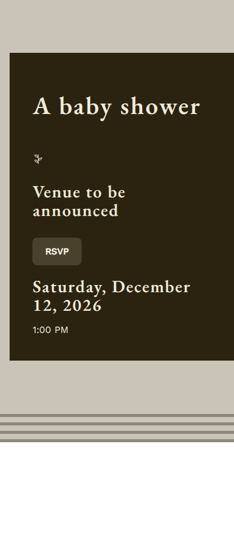
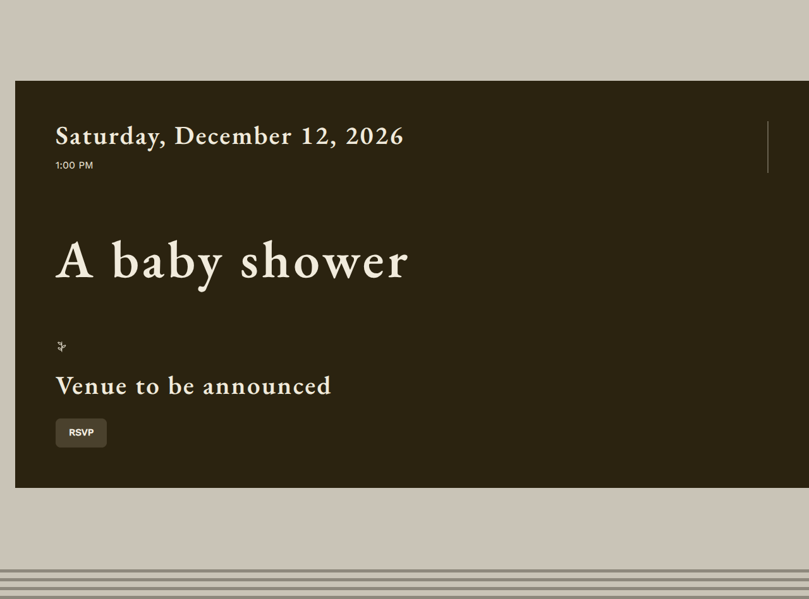
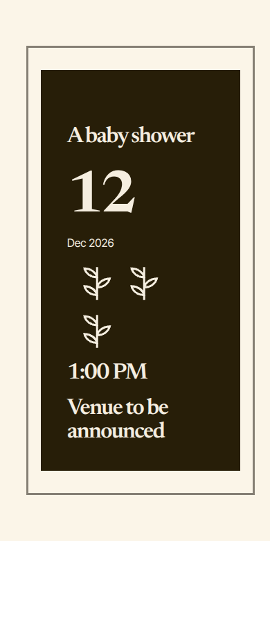
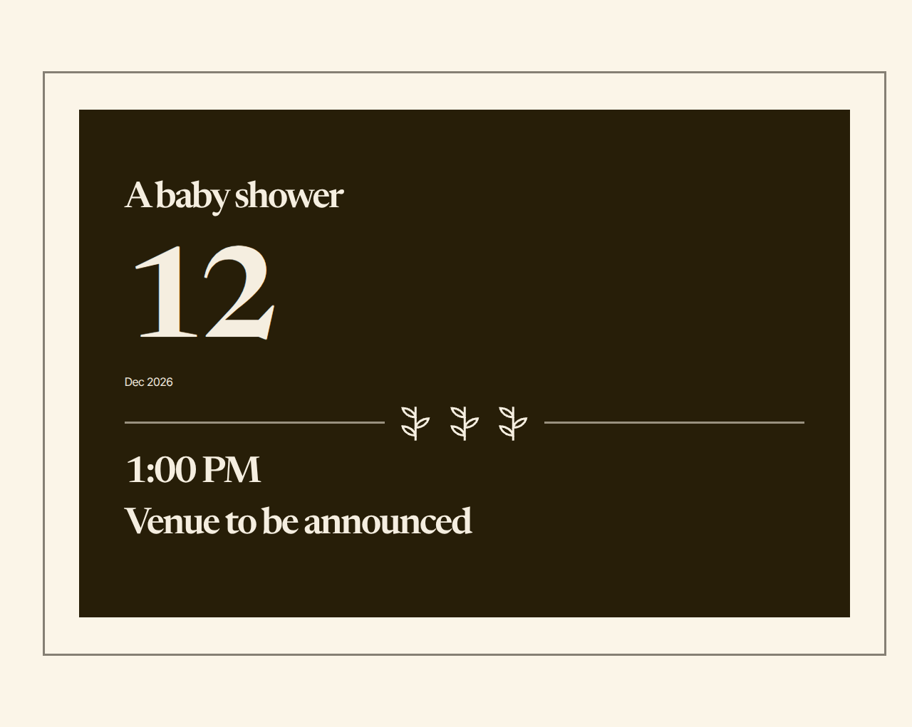

Mediterranean shower. One run, one seed, diagnostic evidence only.
Nothing here is scored. No beauty, wow, originality,
personalization or winner; no ranking and no recommendation. No model was asked to look at any of
it. The twelve questions at the foot are the operator's, and they are left open on purpose.
Creative material and telemetry are kept apart. What the system
made is above; what it cost and how long it took is below. A number folded into a judgement is a
judgement this page is not entitled to make.
No Supabase Storage upload was exercised. The run used a
diagnostic local-directory store behind the ArtworkAssetStore port
(diagnostic-local-directory:/home/user/event-platform/docs/model-evals/results/phase-4g-e2e-mediterranean-shower/artwork).
The host's words
See raw-prompt.txt. The system's own reading of them:
A sun-warmed, old-world Mediterranean courtyard garden interpreted with elegant ease: cultivated greenery, ripe lemons, time-softened tile, warm ivory, and faded blue. The atmosphere should feel intimate and celebratory rather than themed, juvenile, or ceremonious.
A lush, lived-in garden welcome that draws guests close with leafy enclosure, softened age, and easy warmth.
Premise
Courtyard Embrace — The garden becomes a hospitable enclosure, drawing guests inward through cultivated growth, architectural forms, and tactile age. The celebration feels already gathered around them rather than presented as a destination theme.
Creative direction
A sun-warmed, old-world Mediterranean courtyard garden interpreted with elegant ease: cultivated greenery, ripe lemons, time-softened tile, warm ivory, and faded blue. The atmosphere should feel intimate and celebratory rather than themed, juvenile, or ceremonious.
Design family
editorial · density spacious · ornament decorative
No artwork was reserved for this direction. Check capabilities.artwork in this concept's JSON before reading that as a refusal: true means the optionality gate allowed it and the primitive, its nesting and its limits were all in the request, so the composition declined something it was shown.

390

1280
2. Ripe Radiance
Sunlit lemons punctuate the garden with a polished, convivial energy that feels vivid, grown-up, and warmly inviting.
Premise
Ripe Radiance — Ripeness becomes the pulse: fruit and leaves recur as concentrated moments of sunlit abundance, turning cultivated botanical detail into a lively invitation to gather.
Creative direction
A sun-warmed, old-world Mediterranean courtyard garden interpreted with elegant ease: cultivated greenery, ripe lemons, time-softened tile, warm ivory, and faded blue. The atmosphere should feel intimate and celebratory rather than themed, juvenile, or ceremonious.
Design family
invitation · density compact · ornament restrained
No artwork was reserved for this direction. Check capabilities.artwork in this concept's JSON before reading that as a refusal: true means the optionality gate allowed it and the primitive, its nesting and its limits were all in the request, so the composition declined something it was shown.

390

1280
3. Weathered Rhythm
A calm, tactile world where time-softened geometry is gently loosened by cultivated greenery.
Premise
Weathered Rhythm — Repetition supplies order, but age and growth loosen it. Weathered geometry becomes a calm underlying rhythm through which patina and cultivated greenery suggest an established, lived-in world.
Creative direction
A sun-warmed, old-world Mediterranean courtyard garden interpreted with elegant ease: cultivated greenery, ripe lemons, time-softened tile, warm ivory, and faded blue. The atmosphere should feel intimate and celebratory rather than themed, juvenile, or ceremonious.
Design family
invitation · density balanced · ornament restrained
No artwork was reserved for this direction. Check capabilities.artwork in this concept's JSON before reading that as a refusal: true means the optionality gate allowed it and the primitive, its nesting and its limits were all in the request, so the composition declined something it was shown.